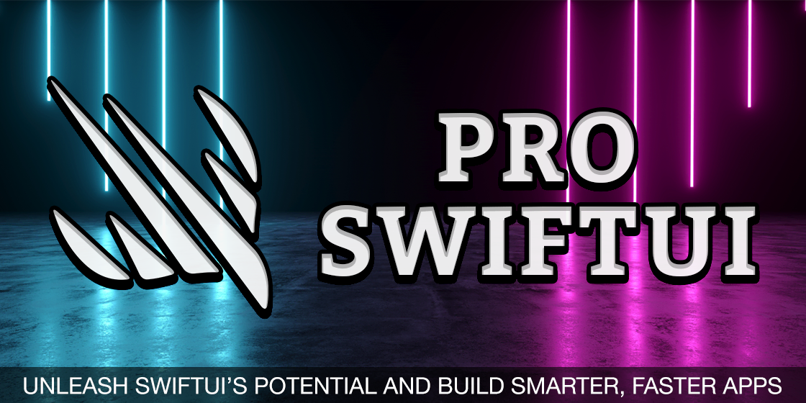
It’s no secret that I'm obsessed with drawing using SwiftUI, and honestly I’ve lost countless hours noodling around, experimenting, and having fun creating beautiful effects with surprisingly little code. I want to explore a handful of these techniques, partly because it really is a lot of fun creating beautiful things, but also because I hope to inspire you to add some extra surprise and delight to your own apps.
We’re going to start with something nice and easy: a trivial particle system that lets us draw in glowing lights by touching the screen. Particle systems work by creating dozens, hundreds, or even thousands of very small images, which can be colored and animated to create a variety of special effects such as fire, smoke, fog, and rain.
In this initial foray into drawing, our particle system will be trivial: we’ll constantly be creating and deleting particles, and the user will be able to move their finger to reposition the place where we generate particles from. This takes fewer than 50 lines of code, and that’s including whitespace and lines that are just closing braces – it’s a great entry point into the world of drawing with SwiftUI.
The first step is to create a Particle struct that will store the data one particle needs to work. We’ll make more advanced particles later on, but for this example our particle just needs two pieces of data: its position on the screen, and the date it should be destroyed. We’ll pass the X and Y values in from the particle system that generates it all, but we can automatically set the destruction date to be the current time plus 1 second so that each particle lasts that long before being destroyed.
Add this struct now:
struct Particle {
let position: CGPoint
let deathDate = Date.now.timeIntervalSinceReferenceDate + 1
}Now that we have defined a single particle, the next step is to create the particle system responsible for creating and managing all the particles. This has six interesting things:
update(). This will be called every time we want to redraw our canvas, and will be provided with the current time.deathDate property.It takes much less code to implement all that than it does to explain it, so go ahead and add this class now:
class ParticleSystem {
var particles = [Particle]()
var position = CGPoint.zero
func update(date: TimeInterval) {
particles = particles.filter { $0.deathDate > date }
particles.append(Particle(position: position))
}
}That completes all our data model, so what remains is to create one of those particle systems inside ContentView, then use its data to render particles inside TimelineView and Canvas.
This class doesn’t conform to ObservableObject because it doesn’t need to – it manages itself without needing to publish any changes. So, we’ll create it using @State rather than @StateObject, which is enough to keep the object alive through view recreations without also requiring ObservableObject.
Add this property to ContentView now:
@State private var particleSystem = ParticleSystem()Now for the view’s body. I’m going to tackle this in three parts to make it easier to follow: we’ll create the SwiftUI views first, then add some modifiers to make it look and work right, then finish up by adding the actual drawing code.
First, the views. We need a TimelineView so that SwiftUI knows to redraw our layout on a fixed schedule, which in our case will be .animation so it redraws as often as necessary to get smooth animations. Inside that we’ll place a Canvas, which is where SwiftUI gives us free rein to draw whatever we need inside a drawing context with a fixed size.
Replace your current body property with this:
TimelineView(.animation) { timeline in
Canvas { ctx, size in
// drawing code here
}
}We’re going to add three modifiers to that TimelineView to get exactly the right effect:
TimelineView to ignore the safe area, so the user can draw to the very edges of the screen.Add these three modifiers to the TimelineView now:
.gesture(
DragGesture(minimumDistance: 0)
.onChanged { drag in
particleSystem.position = drag.location
}
)
.ignoresSafeArea()
.background(.black)The last part of the puzzle is to fill in the drawing code. This needs to call the particle system’s update() method with the current time from the TimelineView, then loop over all the particles and render a circle at their location. I chose a 32x32 size for my circles, but you can make the circle whatever size you want – just make sure you subtract half the size from the X and Y position so the circle is centered on the user’s finger.
Replace the // drawing code here comment with this:
let timelineDate = timeline.date.timeIntervalSinceReferenceDate
particleSystem.update(date: timelineDate)
for particle in particleSystem.particles {
ctx.fill(Circle().path(in: CGRect(x: particle.position.x - 16, y: particle.position.y - 16, width: 32, height: 32)), with: .color(.cyan))
}Go ahead and give it a try. All being well you should find you can drag your finger on the screen to see blue circles follow you around, each of which should disappear a second after they are created.
That’s a start, but it’s not what I’d call beautiful. We can do better! First, rather than making circles simply disappear we can make them fade away slowly by subtracting the current time from their deathDate property and using that for the canvas opacity. So, if deathDate was 3.5 and the timeline date was 3.0, we’d set opacity to 0.5.
Add this line of code directly before the ctx.fill() line:
ctx.opacity = particle.deathDate - timelineDateThat’s an improvement, but to get something much nicer I’d like you to add these two lines of code directly after the call to particleSystem.update():
ctx.blendMode = .plusLighter
ctx.addFilter(.blur(radius: 10))The first of those tells SwiftUI to blend the circles together so the colors get lighter when they overlap, and the second will apply a Gaussian blur to all the circles so they look more like a smooth glow than individual circles.
And with that we’re done with our first drawing example! Try it out and see what you think – given how little code we’ve written I think the end result is quite beautiful!
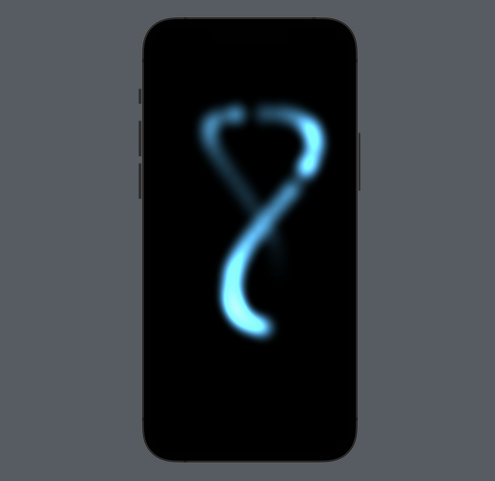
Now that you’ve got the hang of a basic particle system, let’s take it up a notch by creating particles that move independently rather than always staying where they were created. This means being able to constantly adjust our particles after they have been created, which in turn means using a class rather than a struct for the Particle type.
Add this class now:
class Particle {
var x: Double
var y: Double
let xSpeed: Double
let ySpeed: Double
let deathDate = Date.now.timeIntervalSinceReferenceDate + 2
init(x: Double, y: Double, xSpeed: Double, ySpeed: Double) {
self.x = x
self.y = y
self.xSpeed = xSpeed
self.ySpeed = ySpeed
}
}There are a few things that deserve extra explanation:
x and y into two separate properties because it makes them easier to work with.ySpeed will determine how fast this particle moves down the screen, and the xSpeed is there to let us add a very small amount of horizontal movement to make the particles look a bit more natural.Next we need to write the ParticleSystem class. This is similarly enhanced from our previous, simpler particle system, because now it needs some extra features:
That second point is the most interesting from a code perspective, because we need to make sure particles move at the same speed no matter whether update() is called 60 times a second (the ideal for many devices), 120 times a second (the ideal for devices that support ProMotion), or even just 30 frames a second if your app is busy doing a lot of other work.
This can be done using a technique called frame-independent movement, which means we calculate how much time has passed since update() was last called, then multiply our movement speed by that time difference. So, if we want to move 60 points per second and a tenth of a second has elapsed since the last update, we move by 6 points, but if only 1/60th of a second elapsed then we move only 1 point.
Doing this means giving our ParticleSystem class an extra property that stores when update() was last called. This can be the current date to begin with, but it will be changed every time update() is called.
Start with this new class:
class ParticleSystem {
var particles = [Particle]()
var lastUpdate = Date.now.timeIntervalSinceReferenceDate
}The update() method will accept the same time interval we used in the previous particle system, but like I said we’re also going to make it accept the size of the screen so we know where particles can be created. Each new particle needs various values provided as part of its initializer:
Note: It’s important we replace the value of lastUpdate with whatever is the new timeline date, so the next time the method is called we move the correct amount.
Add this method to ParticleSystem now:
func update(date: TimeInterval, size: CGSize) {
let delta = date - lastUpdate
lastUpdate = date
// update all particles here
let newParticle = Particle(x: .random(in: -32...size.width), y: -32, xSpeed: .random(in: -50...50), ySpeed: .random(in: 100...500))
particles.append(newParticle)
}Obviously I left the most important part out, which is where we update each particle to take into account its movement across the screen. We need to remove particles from our array whenever they pass their death date, just like we did with the previous particle system, so we might as well use the same loop to perform our frame-independent movement.
Add this loop in place of the // update all particles here comment:
for (index, particle) in particles.enumerated() {
if particle.deathDate < date {
particles.remove(at: index)
} else {
particle.x += particle.xSpeed * delta
particle.y += particle.ySpeed * delta
}
}That completes our data model, so now we can turn to the SwiftUI view to render it all using TimelineView and Canvas. We’re going to write a few versions of this, but our initial pass is identical to the ContentView struct from our previous particle system apart from three changes:
update() method, so it knows the full range of space that can be used to create particles.Otherwise it’s exactly the same, so replace your existing ContentView struct with this:
struct ContentView: View {
@State private var particleSystem = ParticleSystem()
var body: some View {
TimelineView(.animation) { timeline in
Canvas { ctx, size in
let timelineDate = timeline.date.timeIntervalSinceReferenceDate
particleSystem.update(date: timelineDate, size: size)
ctx.addFilter(.blur(radius: 10))
for particle in particleSystem.particles {
ctx.opacity = particle.deathDate - timelineDate
ctx.fill(Circle().path(in: CGRect(x: particle.x, y: particle.y, width: 32, height: 32)), with: .color(.white))
}
}
}
.ignoresSafeArea()
.background(.black)
}
}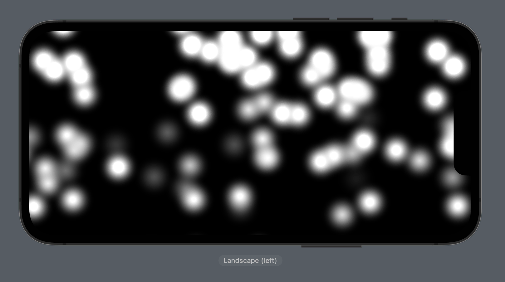
That already creates a neat snow effect, but it takes only a little extra work to push this into much more interesting territory. For example, we could make our snow blobs look like metaballs with only a little extra code.
Important: Before you decide to email me saying I wrote “metaballs” when I meant to write “meatballs”, you should know that metaballs is the correct spelling and is the term used for organic-looking shapes that appear to meld together when they are in close proximity to each other.
If you haven’t seen metaballs in action before, you’re in for a real treat – not least because it’s remarkable how little code it takes in SwiftUI.
The first step is to tell SwiftUI to render all our particles into a distinct layer. This means all the particles will be rendering into a new transparent context, which is then drawn onto our original context in one pass. So, rather than seeing each particle as individual, the original context will just be given all the particles as one finished drawing – perfect for blending into metaballs.
To make this happen, add ctx.drawLayer { ctx in before the for loop in our canvas, and add a closing brace after the loop ends, like this:
ctx.drawLayer { ctx in
for particle in particleSystem.particles {
ctx.opacity = particle.deathDate - timelineDate
ctx.fill(Circle().path(in: CGRect(x: particle.x, y: particle.y, width: 32, height: 32)), with: .color(.white))
}
}Important: That creates a new context inside drawLayer(). I’ve given it the same ctx name as the outer layer because a) we can’t draw to the outer context from inside the layer, and b) it means we don’t need to change the opacity and fill() lines, but you’re welcome to name it inner or similar.
If you run the code now you’ll see nothing has changed, but behind the scenes SwiftUI is now rendering all the particles into a new layer, then drawing that layer into our main context. Although it looks the same to the user, the behind the scenes part matters to us because if we add more filters they get applied to the whole sublayer in one pass – overlapping circles are treated like one contiguous shape rather than two separate ones.
In this case we’re going to add the alpha threshold filter, which tells SwiftUI to replace all the pixels with a specific color if they fall within alpha values of our choosing, or make them transparent otherwise. The maximum alpha value is 1 by default, so if we specify 0.5 for the minimum it means that all pixels between alpha 0.5 and 1.0 will be replaced with a specific color, but pixels outside that alpha range will be invisible.
Think about it: we’re using a blur filter already, so already quite a lot of each circle will fall outside that alpha threshold because only the central parts will have enough opacity to pass the threshold. But when two circles overlap, even partly, the parts where they overlap will have a higher alpha value, and because we’re rendering all our circles into a sublayer it means this filter will see the combined circle areas as a single pixel colors to evaluate.
To see the result of all this, and the following code directly before the blur filter:
ctx.addFilter(.alphaThreshold(min: 0.5, color: .white))If you run the code now you should see the metaball effect in full swing: as the particles overlap each other they will appear to merge together as if they were water drops rolling down a window. Hopefully you can see what I meant when I said they looked organic!
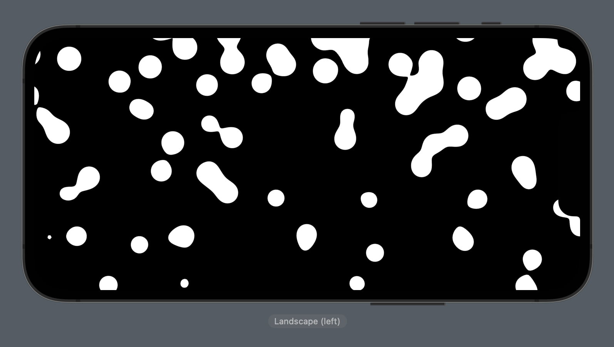
To create an even more interesting effect, try using your TimelineView as the mask for something else, such as a linear gradient, like this:
LinearGradient(colors: [.red, .indigo], startPoint: .top, endPoint: .bottom).mask {
// current TimelineView code
}
.ignoresSafeArea()
.background(.black)Now the metaballs will appear to change color the lower they get on the screen, creating an effect reminiscent of lava lamps. Can we make an actual lava lamp effect? Certainly, but that takes quite a bit more thinking…
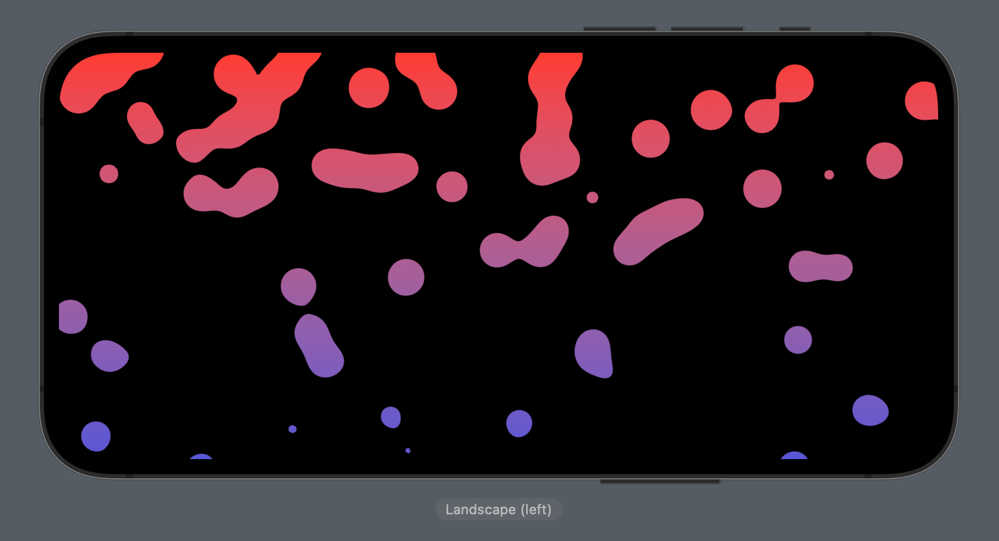
For a really advanced effect, we can use SwiftUI to create a lava lamp by combining Canvas, metaballs, and a chunk of mathematics. To make things easier to follow I’m going to adopt a simplified approach first that does without the math, but if you have the patience I encourage you stick around for the extended version – it’s worth it!
As with the previous two particle systems, the first step is to define what one particle needs to know in order to work. The particles will move, which means we need a class with X and Y coordinates, but this time there are a few small changes:
Identifiable with a random UUID.There is also one important change: we need to fill our lava lamp with lots of particles when the app is launched, which means creating all our particles up front rather than on a rolling basis. That in turn means we don’t actually know the canvas’s dimensions when creating our particles, so rather than storing absolute X and Y positions – e.g. X:50 Y:300 – we will instead store relative positions between 0 and 1, where 0 is the top or left edge and 1 is the bottom or right edge.
So, start by creating this new Particle class:
class Particle: Identifiable {
let id = UUID()
var size = Double.random(in: 100...250)
var x = Double.random(in: -0.1...1.1)
var y = Double.random(in: -0.25...1.25)
var isMovingDown = Bool.random()
var speed = Double.random(in: 0.01...0.1)
}Note: That creates particles in positions that go slightly beyond the screen’s bounds to make sure we get a full spread. The spread is wider for the Y axis because we’ll be moving particles vertically, so they can safely go further off the screen before coming back on.
Next we need to create a ParticleSystem class responsible for creating the lava bubbles and moving them around. This starts similar to the previous particle system, so add this now:
class ParticleSystem {
let particles: [Particle]
var lastUpdate = Date.now.timeIntervalSinceReferenceDate
func update(date: TimeInterval) {
let delta = date - lastUpdate
lastUpdate = date
for particle in particles {
// move the particles
}
}
}Apart from the // move the particles comment, there is one important difference here: rather than creating particles dynamically as the app runs, we’re instead going to create them all up front. This is why particles can be a constant array now, and also why it doesn’t have a default value – we need to add an initializer to create all our particles up front.
We could make the number of particles fixed, but it’s hardly any extra work to make that amount customizable. So, add this initializer to ParticleSystem now:
init(count: Int) {
particles = (0..<count).map { _ in Particle() }
}Now for the movement: if the particle is moving down, we’ll add to its Y position using frame-independent movement, otherwise we’ll subtract from it. Critically, we’ll add two extra checks to make sure particles flip their movement when they are fully off the screen.
Replace the // move the particles comment with this:
if particle.isMovingDown {
particle.y += particle.speed * delta
if particle.y > 1.25 {
particle.isMovingDown = false
}
} else {
particle.y -= particle.speed * delta
if particle.y < -0.25 {
particle.isMovingDown = true
}
}Now for the main event: rendering all this in SwiftUI. We’re going to take a different approach here, partly because it demonstrates an important Canvas technique, but honestly mostly because it makes it much easier to switch over to the more advanced version if you decide to pursue it!
The different approach is this: rather than just filling circles in our Canvas code, we are instead going to create our shapes as SwiftUI views and pass them into the canvas as symbols. This is a real powerhouse Canvas technique because it lets us place any kind of SwiftUI view directly into our drawings. This will be really important in the more advanced lava lamp effect, but for now we’ll just create SwiftUI circles in there.
Apart from that drawing change, there are two other thing we’re going to do:
LinearGradient mask as before, but this time we’ll give it a background color indigo. Why? Well, if lava lamps can’t be disco, what can?Go ahead and add this ContentView now:
struct ContentView: View {
@State private var particleSystem = ParticleSystem(count: 15)
@State private var threshold = 0.5
@State private var blur = 30.0
var body: some View {
VStack {
LinearGradient(colors: [.red, .orange], startPoint: .top, endPoint: .bottom).mask {
TimelineView(.animation) { timeline in
Canvas { ctx, size in
particleSystem.update(date: timeline.date.timeIntervalSinceReferenceDate)
ctx.addFilter(.alphaThreshold(min: threshold))
ctx.addFilter(.blur(radius: blur))
ctx.drawLayer { ctx in
// draw particles here
}
} symbols: {
// create symbols here
}
}
}
.ignoresSafeArea()
.background(.indigo)
LabeledContent("Threshold") {
Slider(value: $threshold, in: 0.01...0.99)
}
.padding(.horizontal)
LabeledContent("Blur") {
Slider(value: $blur, in: 0...40)
}
.padding(.horizontal)
}
}
}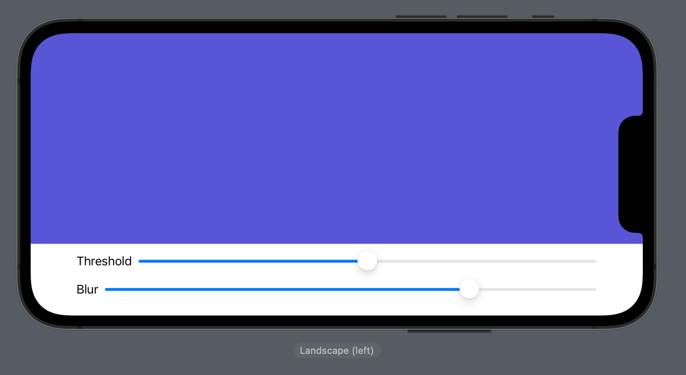
I’ve removed two key parts from that code, both relating to the way canvas symbols work. You see, the way this works is that we get to pass in as many SwiftUI views as we want, either statically written out in code or dynamically using ForEach, but the main thing is that we give each view a unique identifier. Our Particle class conforms to Identifiable, which means SwiftUI will take care of that part for us.
So, for the case of our lava particles, I’d like you to add the following code in place of the // create symbols here comment:
ForEach(particleSystem.particles) { particle in
Circle()
.frame(width: particle.size, height: particle.size)
}That creates a whole bunch of SwiftUI Circle shapes, each the correct size for their bubble. Again, SwiftUI will silently tag each view for us because of the Identifiable conformance, and that matters because when it comes to the rendering code – where the // draw particles here comment is – we need to look up each circle using the same identifier.
This lookup is done using the resolveSymbol(id:) method, which takes an identifier to look up in the list of symbols. If it’s found we’ll be sent back the resolved symbol to use, which will be a SwiftUI view we can draw just like any other shape.
Remember, this time we’re using relative positions for our particles, so we need to multiply the particle’s X and Y positions by our canvas’s width and height respectively.
Go ahead and replace the // draw particles here comment with this:
for particle in particleSystem.particles {
guard let shape = ctx.resolveSymbol(id: particle.id) else { continue }
ctx.draw(shape, at: CGPoint(x: particle.x * size.width, y: particle.y * size.height))
}That’s us done, at least with the simplified version – try it out and see what you think! The code is broadly similar to our previous particle system, but I think it looks remarkably good.
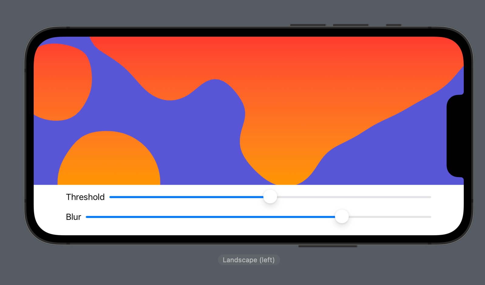
Can we do better? Yes! If we create irregular polygons rather than circles, we can adjust the length of each of their sides using animation, making the shape change constantly. Thanks to our blur filter the shapes will still look nice and smooth even though they are pretty rough polygons
I’ll be honest, this does take a bit of math. However, I have tried to remove as much code as I possibly can, so hopefully it’s understandable.
First, the good news: Particle and ParticleSystem don’t need to change at all, and only one small line of ContentView will change – most of what we’re writing is new.
Now for the first piece of mathematics: we’re going to add an extension on Array so that it conforms to both VectorArithmetic and AdditiveArithmetic when it contains Double as its element type. These protocols are used to provide animating values to SwiftUI, which in our case means the polygon points we generate will animate to be longer or shorter over time.
Yes, I know that extending a type we don’t own to support protocols we don’t own is frowned upon, but it avoids having to create a wholly separate type – this code really is as simple as I can make it!
There are quite a few parts here, so start by adding this empty extension so we can fill it in bit by bit:
extension Array: VectorArithmetic, AdditiveArithmetic where Element == Double {
}First, we need to tell SwiftUI what zero looks like, which for us means an empty array with 0 in. Add this to the extension now:
public static var zero = [0.0]Next we need to add operator overloads for += and -= so that SwiftUI can add one array to another. I’m going to assume (again, this is simplified!) that our lava polygons don’t change their side counts over time, so we can safely enumerate over both arrays and add or subtract each item.
So, add these two new methods to the extension:
public static func +=(lhs: inout [Double], rhs: [Double]) {
for (index, item) in rhs.enumerated() {
lhs[index] += item
}
}
public static func -=(lhs: inout [Double], rhs: [Double]) {
for (index, item) in rhs.enumerated() {
lhs[index] -= item
}
}Next, the protocols require that add a scale(by:) method that multiplies each item in the array by another number, so add this:
public mutating func scale(by rhs: Double) {
for (index, item) in self.enumerated() {
self[index] = item * rhs
}
}Finally, the protocols require we add a - operator overload and a magnitudeSquared property. Although the protocols require that these exist, they won’t actually be used by our lava lamp effect so we can just write dummies like these two:
public static func -(lhs: [Double], rhs: [Double]) -> [Double] { [] }
public var magnitudeSquared: Double { 0 }Okay, that completes our extension, so now we’re going to create two structs to represent each blob: one that creates the shape using whatever points are provided, and one that wraps the shape in a view that animates over time.
The view is straightforward, but the shape is where more mathematics comes in, so let’s start there.
First, we can create a new struct that conforms to Shape, and has a property to store an array of numbers that represent how much we should shrink or extend each side of the polygon. In order for this to be animated we need to either store these values in an animatableData property containing these values, or store them in another property and provide a getter/setter combo for animatableData.
We’re aiming for the simplest solution, so that means using a single property. Add this now:
struct AnimatablePolygonShape: Shape {
var animatableData: [Double]
init(points: [Double]) {
animatableData = points
}
}Now for the mathematics: we need to create a path(in:) method that creates a path from our polygon’s points, taking into account the animatable data array that describes how much to shrink or extend each side.
We’ll fill this in piece by piece, starting with this:
func path(in rect: CGRect) -> Path {
Path { path in
// more code to come
}
}If we want to draw completely regular polygons – i.e., polygons where every side has the same length, we can do so by following a simple procedure:
Again, that creates regular polygons. We want irregular polygons using the animatable Double array, which will contain numbers between 0.8 and 1.2 – one for each point in our polygon. So, once we’ve figured out the correct X/Y coordinates for our regular polygon, we can multiply those values by the matching element in animatableData so that each side can be made any length from 80% to 120% its original size.
That might seem awfully complicated, but I think the code is surprisingly straightforward given how good the finished effect looks!
So, go ahead and replace the // more code to come with this:
let center = CGPoint(x: rect.width / 2, y: rect.height / 2)
let radius = min(center.x, center.y)
let lines = animatableData.enumerated().map { index, value in
let fraction = Double(index) / Double(animatableData.count)
let xPos = center.x + radius * cos(fraction * .pi * 2)
let yPos = center.y + radius * sin(fraction * .pi * 2)
return CGPoint(x: xPos * value, y: yPos * value)
}
path.addLines(lines)Again, if we removed the * value part of that code each of our blobs would be regular n-sided polygons, and if it weren’t for the fact that we only know the shape’s size when path(in:) gets called we could calculate the polygon’s points once in the initializer.
That defines a single irregular polygon shape, but in order to make it move on the screen we need to wrap it in a SwiftUI view that has an animation in place. This is much simpler, but still has a few tricks up its sleeve:
points array with 8 random numbers between 0.8 and 1.2. These will be used for the polygon.Yes, the timer fires three times as fast as the animation takes to complete, which is intentional – it would look strange if one animation completed fully before the next one started, so this way SwiftUI will always be interpolating our animations smoothly. It’s a great little trick, but really effective as you’ll see!
Add this new view now:
struct AnimatingPolygon: View {
@State private var points = Self.makePoints()
@State private var timer = Timer.publish(every: 1, tolerance: 1, on: .main, in: .common).autoconnect()
var body: some View {
AnimatablePolygonShape(points: points)
.animation(.easeInOut(duration: 3), value: points)
.onReceive(timer) { date in
points = Self.makePoints()
}
}
static func makePoints() -> [Double] {
(0..<8).map { _ in .random(in: 0.8...1.2) }
}
}And that’s it! That completes all the major code changes to make the more advanced lava lamp effect work.
To see it in action, we need to change one tiny part of ContentView: in the symbols for the Canvas view, change Circle() to AnimatingPolygon(), like this:
ForEach(particleSystem.particles) { particle in
AnimatingPolygon()
.frame(width: particle.size, height: particle.size)
}Now give it a try and see what you think – you should see our lava blobs now gently change shape all by themselves, even without colliding with other blobs.
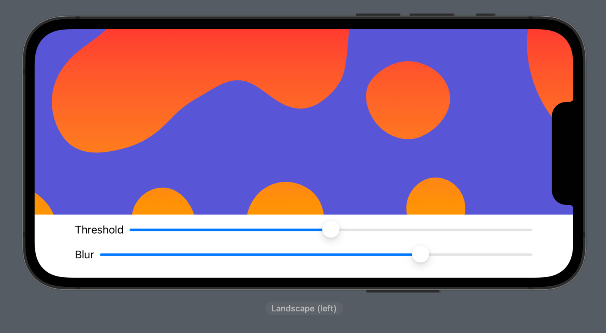
If you want to see the effect more clearly, try reducing the particle system count down to 5 or so, or dragging the blur slider down to 0 so you see our irregular polygons rather than the smoothed out blobs.
Hopefully I managed to find the right balance between mathematical accuracy and explanations that are easy to understand, but more importantly I hope you appreciate the final effect!
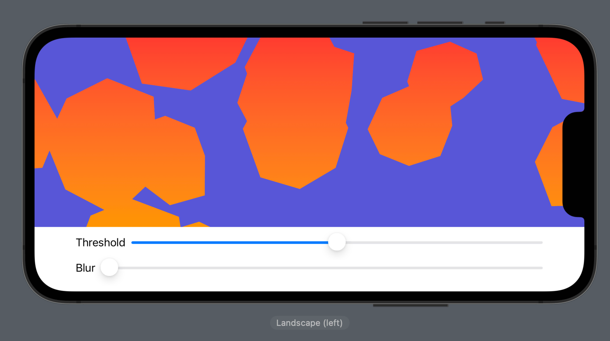
We’ve looked at lots of custom drawing using Canvas, but you can create some really effective results just with plain old shapes and animations. To demonstrate this, I want to show you how to we can create a soothing background animation without even coming close to needing Canvas.
To make this work we’re going to create a new SwiftUI view called BackgroundBlob, which will have a random alignment on the screen and a random color. Inside there we need several modifiers:
offset() to push the blob randomly between -400 and +400 points both horizontally and vertically.The key to this effect is rotating after the offset, which causes the view to be rotated around its original location so that it moves in interesting ways.
Create a new SwiftUI view called BackgroundBlob, then give it this code:
struct BackgroundBlob: View {
@State private var rotationAmount = 0.0
let alignment: Alignment = [.topLeading, .topTrailing, .bottomLeading, .bottomTrailing].randomElement()!
let color: Color = [.blue, .cyan, .indigo, .mint, .purple, .teal].randomElement()!
var body: some View {
Ellipse()
.fill(color)
.frame(width: .random(in: 200...500), height: .random(in: 200...500))
.frame(maxWidth: .infinity, maxHeight: .infinity, alignment: alignment)
.offset(x: .random(in: -400...400), y: .random(in: -400...400))
.rotationEffect(.degrees(rotationAmount))
.animation(.linear(duration: .random(in: 2...4)).repeatForever(), value: rotationAmount)
.onAppear {
rotationAmount = .random(in: -360...360)
}
}
}Tip: I’ve given the animations a very fast duration between 2 and 4 seconds, and also thrown in a bright purple color that really stands out. That’s intentional because I want to really drive home how the effect works, but in practice you’ll want to use 20 and 40 to get something much more sedate, and you might also want to tweak the color palette too.
To get the full effect, we need to layer many of those background blobs on top of each other in a ZStack with a solid background color, so replace your current ContentView code with this:
struct ContentView: View {
var body: some View {
ZStack {
ForEach(0..<15) { _ in
BackgroundBlob()
}
}
.background(.blue)
}
}Now try running it and see what you think! You should see a whole bunch of ellipses swirling around on the screen, and it won’t look anything at all like the soothing background animation I promised.
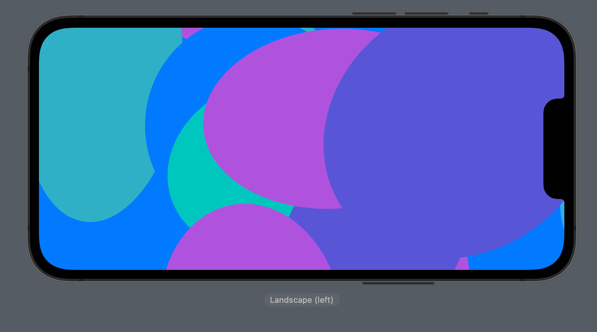
Fortunately, you’re just one line of code away from the final result, because we just need to add a blur to each of the circles to make the blend together nicely.
So, add this below the onAppear() modifier in BackgroundBlob:
.blur(radius: 75)Now you should find all the colors mix together in more interesting ways, and in particular using blobs that are the same blue color as the background causes our shapes to get cut out in interesting ways.
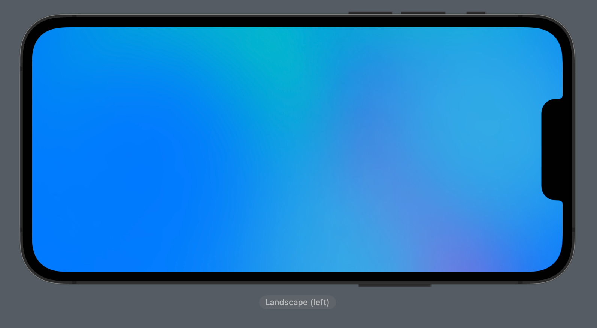
Again, I’ve specifically chosen a fast animation and a bright purple in order to make the effect more obvious – at the very least you’ll probably want to adjust the animation to a range between 20 and 40 seconds to get something gentler. You might also want to adjust the color palette to be more harmonious, or on the other hand you might want something outrageously bright like this:
let color: Color = [.blue, .blue, .blue, .cyan, .indigo, .mint, .orange, .pink, .purple, .red, .teal, .yellow].randomElement()!Regardless of which approach you take, I think it’s a delightfully simple effect and shows just how much work SwiftUI can do for us!
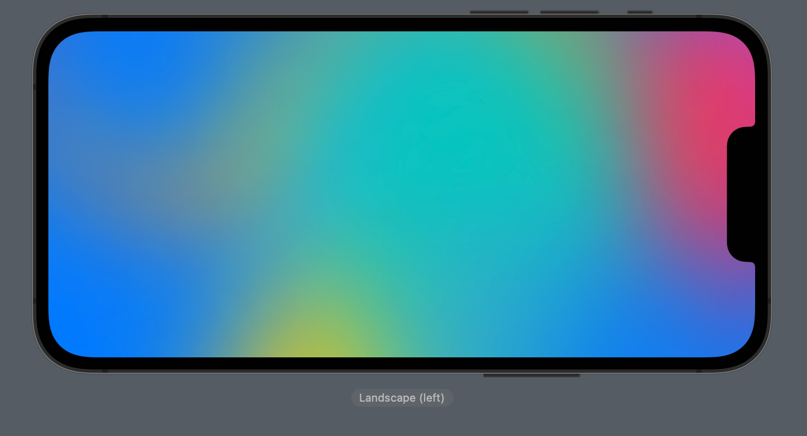
Some people will see SpriteKit in this chapter title and skip right by, which is sad because we’re about to make something absolutely magical.
You see, SpriteKit and SceneKit are Apple frameworks that are backed by Metal, which is Apple’s high-performance 3D rendering framework. This means SpriteKit is able to use Metal to create some extraordinarily advanced effects, and of course SwiftUI is able to embed SpriteKit scenes right into our view hierarchies.
To demonstrate this, we’re going to build a water rippling effect: we’re going to write code that makes any SwiftUI views have animated ripples, like they are being viewed through water. This takes a bit of thinking because it involves multiple parts:
SKScene subclass, which is the SpriteKit equivalent to View.SKScene subclass will be rendered from inside a SwiftUI view, which will make sure it’s configured correctly.That sounds like a lot of work because it is a lot of work, but trust me: this effect is incredible, and most definitely worth it.
Tip: If you’re a coffee drinker, make a brew now – there’s quite a lot to digest here.
To get started, add import SpriteKit to the top of your file. Now add the following the following class:
class WaterScene: SKScene {
}This scene needs to have three properties: one for the sprite it will display, which will be our SwiftUI view with the water effect applied, and a second the UIImage we want to place inside there. We’ll be making that image dynamically, but we still need to store it somewhere.
Important: UIImage is available only iOS, watchOS, and macOS Catalyst. If you intend to target macOS, use NSImage instead.
Add these two properties to the water scene now:
private let spriteNode = SKSpriteNode()
var image: UIImage?I mentioned a third property, and this is the tricky one: we need to create our shader, which means writing some fragment shader code. This is not Swift code – it’s much, much lower-level than that, because of the need to run literally millions of times every second.
SpriteKit lets us write shaders either in GLSL (the OpenGL Shading Language) or MSL (the Metal shading language). Both these two get compiled on the device when the app runs, so it can be fully optimized for whatever hardware it’s running on.
Of the two options, GLSL is significantly simpler than MSL, and helpfully the system will automatically convert GLSL to MSL when compiling our shader. So, we’ll be using GLSL here – it’s just as fast, but way less code for us.
Go ahead and add this property to the water scene:
let waterShader = SKShader(source: """
void main() {
// more code to come
}
""")That creates a main() function in our shader, with a single comment inside. We’re going to write that line by line, so I can explain what it all does. Before I dive into the code, though, I want to summarize how the effect works:
All set?
Okay, the first step is to figure out how fast we want our effect to happen. This can be done by reading two values that will be passed in externally: u_time will tell us how much time has passed since the shader was created, and u_speed will tell us how fast the user has requested for the water to move. If we multiply those two together we are effectively making time move faster, so the water will ripple more quickly.
Put this in your main() function now:
float speed = u_time * u_speed;Next we need to decide which pixel we’re going to read. Here we need to use several more external values: v_tex_coord will tell us which pixel we were asked to read, u_frequency will contain how fast the user wants ripples to be created, and u_strength will tell us how strong the user wants the effect to be.
Figuring out which pixel to use involves a small amount of mathematics, so let me break it down:
speed to the current time multiplied by how fast the user wants the ripples to happen.speed first, then multiply by frequency. cos() to get a value between -1 and 1 telling us which pixel direction we want to move in.Here’s a worked example, assuming our X coordinate is 22, our speed is 8, our frequency is 4 and our strength is 2:
So, we read 1.62 pixels to the left – yes it’s not a whole number, but Metal will figure it out. Alternatively, if we were reading X:23 rather than X:22, we would get cos((23 + 8) * 4) * 2, which is approximately -0.19, so the pixel offset we read is slightly different, which creates the ripple effect.
Add this line of code next:
v_tex_coord.x += cos((v_tex_coord.x + speed) * u_frequency) * u_strength;Tip: Remember, v_tex_coord tells us which X/Y coordinates we were asked to read.
To get the Y offset, we do the same thing as X except now using sin() rather than cos():
v_tex_coord.y += sin((v_tex_coord.y + speed) * u_frequency) * u_strength;At this point we now know exactly which pixel we want to read, so we need to read that value and send it back. GLSL provides three helpers here:
u_texture.texture2D() function, passing a texture and a pixel coordinate.texture2D() will be the new color to use, and we can assign that to the special value gl_FragColor – that’s what SpriteKit will use for the finished pixel color for our shader.Add this final line to the function now:
gl_FragColor = texture2D(u_texture, v_tex_coord);Tip: If we try and read pixels from outside the bounds of the texture, Metal will automatically wrap them around to the other side for us. As a result, it usually works better if your SwiftUI views have a little padding around them to avoid this wrapping.
I know it took a lot of explaining, but the entire function is really just this:
void main() {
float speed = u_time * u_speed;
v_tex_coord.x += cos((v_tex_coord.x + speed) * u_frequency) * u_strength;
v_tex_coord.y += sin((v_tex_coord.y + speed) * u_frequency) * u_strength;
gl_FragColor = texture2D(u_texture, v_tex_coord);
}Fragment shaders are easy to write once you get the hang of them – this one is taken from a huge library of them I wrote for my ShaderKit repository, which you can find here: https://github.com/twostraws/ShaderKit/.
We’re done with the shader now, but we still have some SpriteKit work to do. First, when our scene loads we need to do some quick set up work:
This can all be done through the sceneDidLoad() method, which is the SpriteKit equivalent to viewDidLoad() from UIKit. Add this method to the class now:
override func sceneDidLoad() {
backgroundColor = .clear
scaleMode = .resizeFill
spriteNode.shader = waterShader
addChild(spriteNode)
}Next we need to write an updateTexture() method, that will convert our UIImage into a texture, place it into the sprite, and make sure it’s all sized and positioned correctly.
Add this method now:
func updateTexture() {
guard view != nil else { return }
guard let image else { return }
let texture = SKTexture(image: image)
spriteNode.texture = texture
spriteNode.size = texture.size()
spriteNode.position.x = frame.midX
spriteNode.position.y = frame.midY
}The very first line of updateTexture() checks whether our scene is currently being shown in a view, because if it isn’t we silently exit to avoid wasting time. When our scene actually is being moved into a real view, SpriteKit will call a separate method named didMove(to:), and that’s our chance to call updateTexture() so everything gets positioned correctly.
Add this now:
override func didMove(to view: SKView) {
updateTexture()
}That finishes all our WaterScene code, so we’re half way there!
The next step is to create a SwiftUI view that’s responsible for creating and managing our water scene. This is the bridge between SpriteKit and the rest of our SwiftUI app – we want this thing to be neatly encapsulated so that we don’t have to worry about SpriteKit every time we use it.
Start by creating a new SwiftUI view called WaterEffect, and give it this code:
struct WaterEffect<Content: View>: View {
@State private var scene = WaterScene()
var speed: Double
var strength: Double
var frequency: Double
@ViewBuilder var content: () -> Content
var body: some View {
}
}That doesn’t have a real body property yet, but before we add that I want to explain what we have so far:
WaterScene instance stored as state, meaning that SwiftUI will keep it alive without watching it for changes.Tip: We need to make the struct generic so that it’s able to render any kind of SwiftUI views.
Inside the body property comes the real work. You see, our content property will contain a whole bunch of SwiftUI views, and we need to pass those to the water scene to render. That thing expects a UIImage, not SwiftUI views, so the first thing we need to do is render those SwiftUI views as an image.
This can be done using the ImageRenderer struct, which accepts any views as its input and has a uiImage property that contains the resulting image.
Add these two to your body property now:
let renderer = ImageRenderer(content: content())
let image = renderer.uiImageTip: If you’re using macOS, access the nsImage property rather than uiImage.
Now that we have our view image ready to go, we can read its size or replace it with .zero if there was a problem:
let size = image?.size ?? .zeroNext we need to send all those user values into the shader. We have speed, strength, and frequency as properties of this view, and our shader expects u_speed, u_strength, and u_frequency to be provided in order to work. All those “u” names are there for a reason: these are called uniforms, which are the name for fixed values we assign to a shader to customize it. These are specified by name and value, with the names matching the names used inside the shader code.
There is one small complication here, but it’s best explained after you see the code. Add this to your body property next:
scene.waterShader.uniforms = [
SKUniform(name: "u_speed", float: Float(speed)),
SKUniform(name: "u_strength", float: Float(strength) / 20.0),
SKUniform(name: "u_frequency", float: Float(frequency))
]Do you see the complication? Rather than sending our strength value in directly, we divide it by 20 to make it a lot smaller – we only need very small offsets to make this work, but it’s hard to work with very small values.
Moving on, we can now assign our new image to the scene, and call its updateTexture() method:
scene.image = image
scene.updateTexture()Finally, we can send back a new SpriteView with that scene in place, making sure to enable transparency on it and also give it a frame matching our rendered view’s size:
return SpriteView(scene: scene, options: .allowsTransparency)
.frame(width: size.width, height: size.height)You’ll be pleased to know we’re now effectively done with our water code – almost everything from now on is just using it somehow.
Our WaterEffect view is capable of rendering any kind of SwiftUI view, so we’re going to create a little sandbox that renders adds some user customization points.
Replace your current ContentView with this:
struct ContentView: View {
@State private var text = "Hello"
@State private var speed = 0.5
@State private var strength = 0.5
@State private var frequency = 5.0
var body: some View {
VStack {
WaterEffect(speed: speed, strength: strength, frequency: frequency) {
// Views to render here
}
TextField("Enter a message", text: $text)
.textFieldStyle(.roundedBorder)
LabeledContent("Speed") {
Slider(value: $speed)
}
LabeledContent("Strength") {
Slider(value: $strength)
}
LabeledContent("Frequency") {
Slider(value: $frequency, in: 5...25)
}
}
.padding()
}
}What should go in place of that // Views to render here comment? It’s down to you! Something like this is a good test of the effect:
Circle()
.fill(.red)
.frame(width: 150, height: 150)
.padding()
.overlay(Circle().stroke(.red, lineWidth: 4))
.overlay(Text(text).font(.title).foregroundColor(.white))
.padding()Reminder: Having some padding around your view is a good idea, because it avoids Metal wrapping pixel coordinates around at the edges.
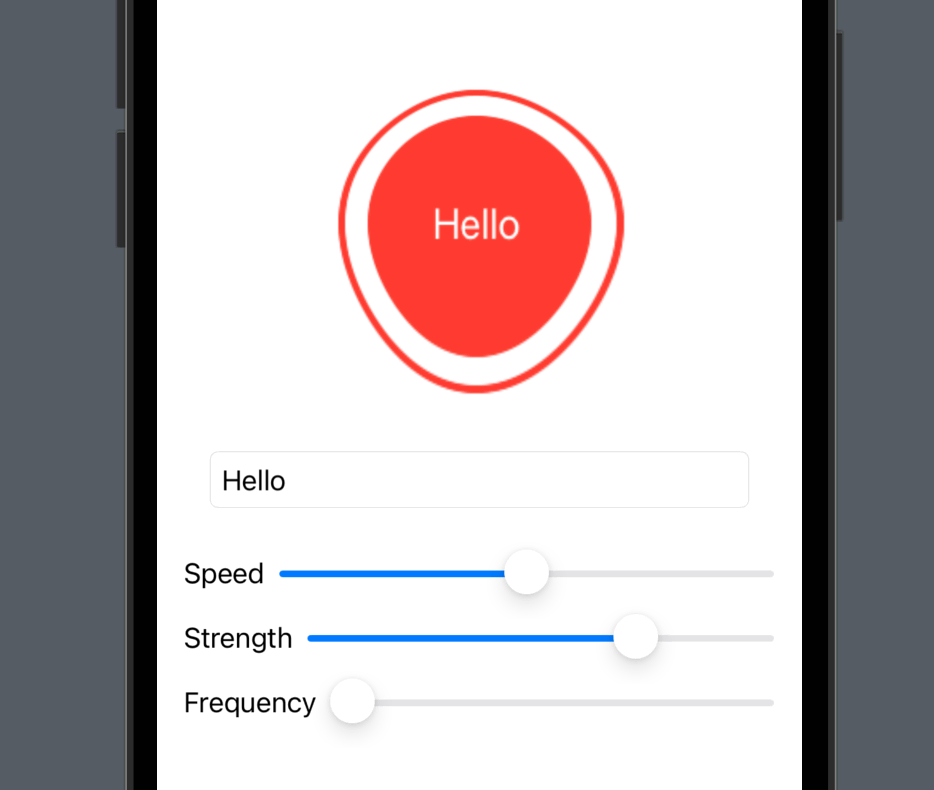
Now try running the effect and see what you think! You’ll see you can type into the text box to have the water effect update immediately, and of course dragging the sliders around is also instant. You might also notice how low the CPU usage is – Metal is fast!
There’s one last thing I want to do before we’re done, and it’s to fix a small problem you might not have even noticed. You see, when using ImageRenderer to convert views into images, SwiftUI will use an image scale of 1.0, which means a 400x400 view will be rendered at 400x400 pixels. That might sound good, but keep in mind that all modern devices have screen resolutions that are either 2x or 3x resolution, which means on an iPhone 14 a 400x400 view should render into a 1200x1200 image.
To fix this, we need to add a property to the WaterEffect view that will read the correct scale for the display:
@Environment(\.displayScale) var displayScaleNow we can assign that to the image renderer like this:
let renderer = ImageRenderer(content: content())
renderer.scale = displayScaleIt’s a small difference, but it does mean the rendered SwiftUI views will look pin sharp now, just as nature intended.
That’s our code all finished now, so go and experiment! And if you’re feeling really brave, try adapting some of the other effects in https://github.com/twostraws/ShaderKit – you’ll see a whole bunch of them in the Shaders directory.
Copyright © 2023 Paul Hudson, hackingwithswift.com.
You should follow me on Twitter.